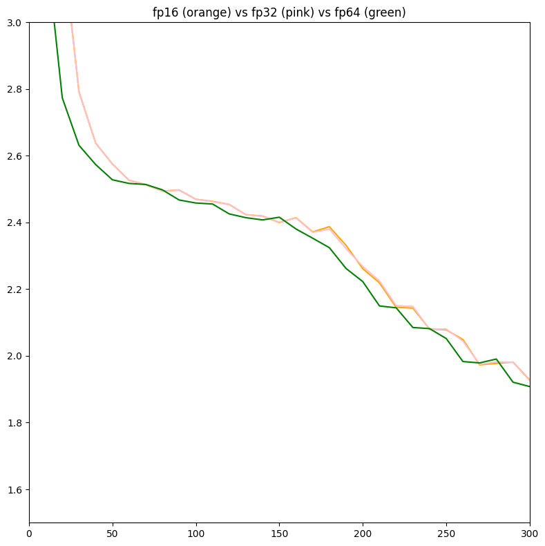
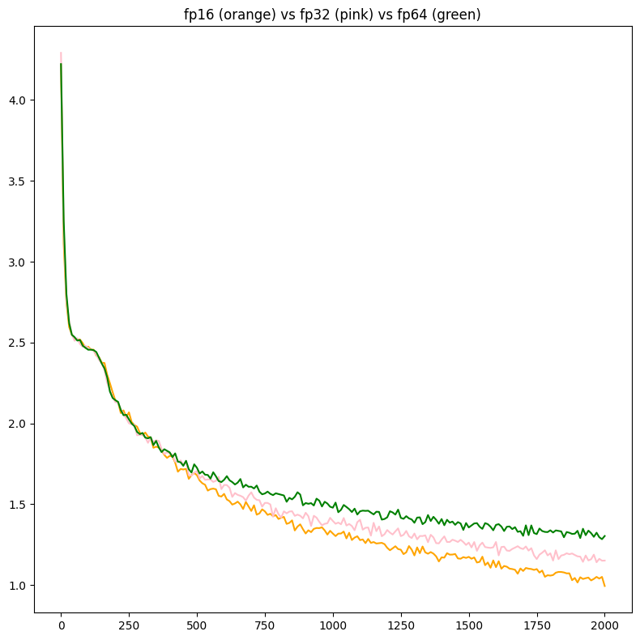

Another quick post, but I'm continuing some work from a couple months ago, where I trained several neural nets in diff datatypes, and it was only fp16/fp32/fp64, and still is (would like to do more, but need to learn how to make datatype code). I decided to try the approach where the weights are space equivalent, or same amount of GB.
From my original work, (inspired by @kosenjuu), the final graph looked like this:

Loss on the same model with diff floating points does nothing, but I think more floating points with half the precision each time will still work better
3 configs,
| config | dtype | layers | (train time)/step |
|---|---|---|---|
| 1 | fp64 | 4 | 170ms |
| 2 | fp32 | 8 | 430ms |
| 3 | fp16 | 16 | 3500ms |
the overall loss graph looks like this:
